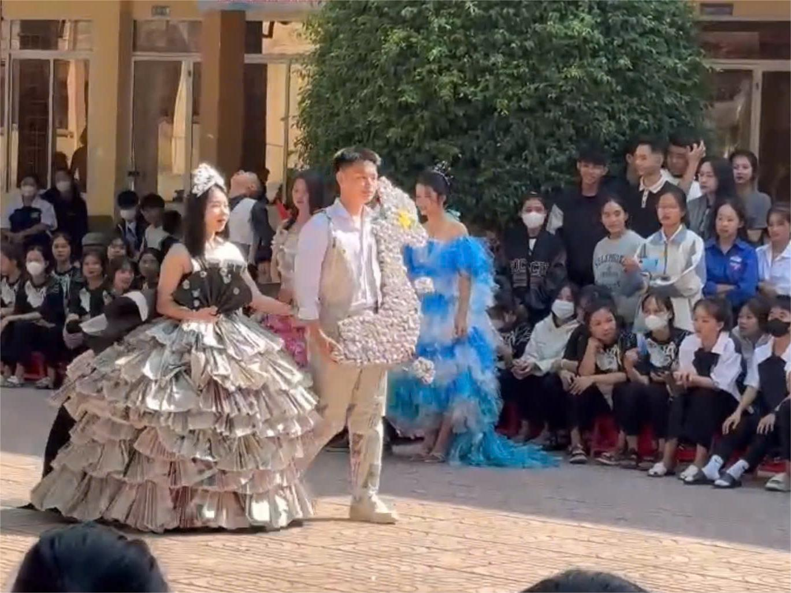
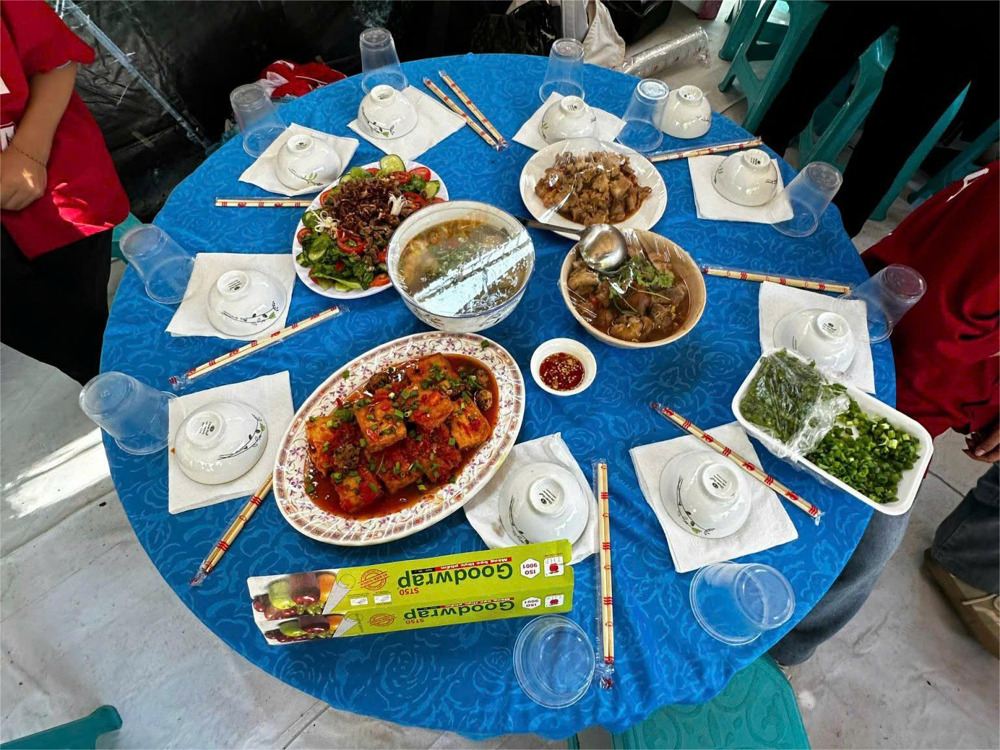
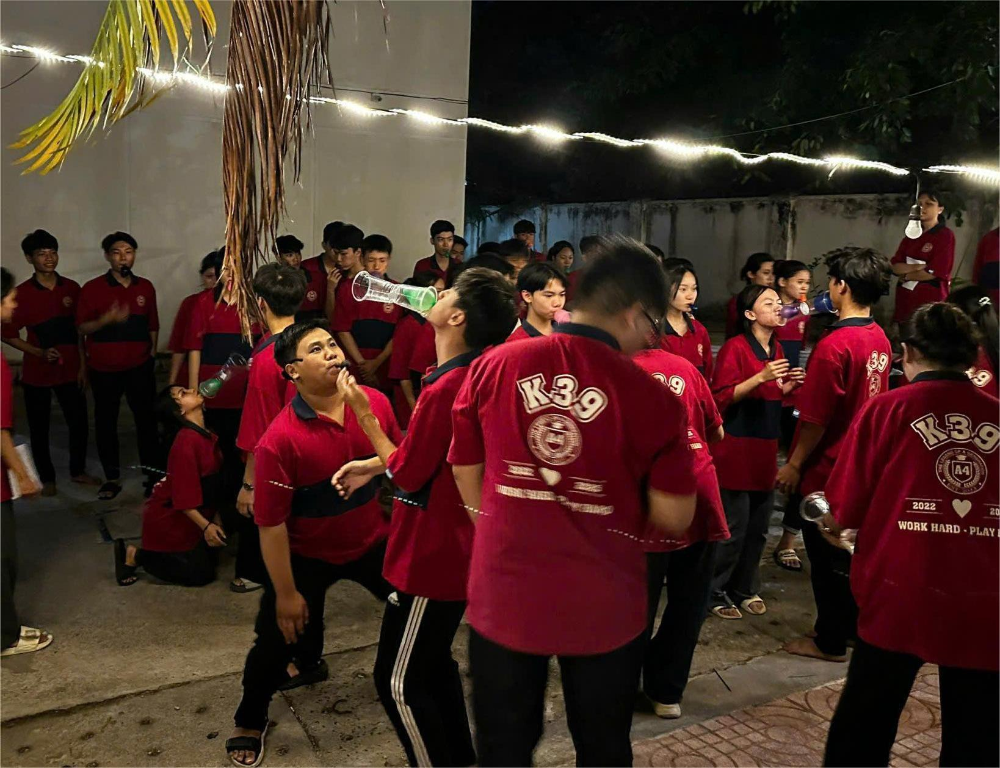
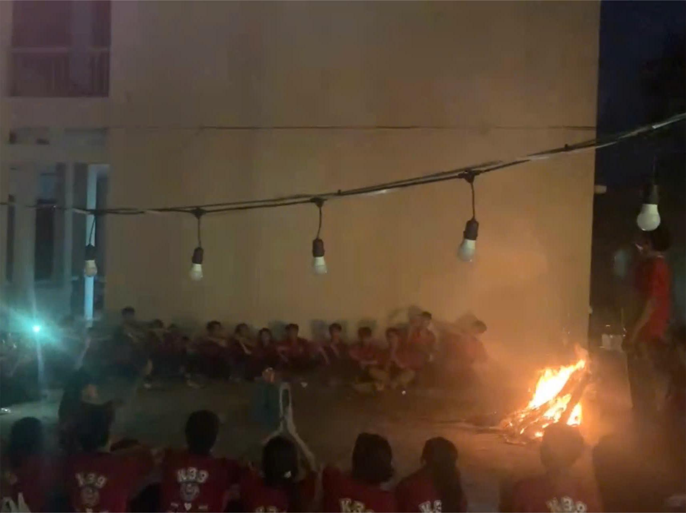

Hoạt động năng nổ và hiệu quả
Cháy hết mình trong các cuộc chơi
Giành những giải thưởng cao nhất
|  |  | |
Thời trang-Nấu ănTại CLB nghệ thuật có các hoạt động để thể hiện năng khiếu của mọi người trong lớp. Các bạn có thể thể hiện tài năng nấu nướng của mình tại hội trại 26/3 để mọi người cùng thưởng thức, trong đó có cả các thầy cô cũng được mời đến hoặc nấu nướng để bán tại quầy hàng của lớp.Về thời trang, các bạn trong lớp thể hiện tài năng của mình về thiết kế thời trang bằng những vật liệu đơn giản như giấy báo và một số vật liệu khác, mặc dù là giấy báo nhưng bằng tài năng thiết kế của các bạn thì nó trở nên vô cùng đặc sắc và đẹp đẽ. Về âm nhạc, các thành viên trong lớp được tập nhảy dân vũ, cùng với đó là có một số bạn thể hiện giọng ca của mình tại sân khấu trường. Đến đêm, cả lớp cùng quây quần bên đám lửa trại cùng nhau ca hát, kể chuyện. |
||
|  |  | |
Âm nhạcVề âm nhạc, các thành viên trong lớp được tập nhảy dân vũ, cùng với đó là có một số bạn thể hiện giọng ca của mình tại sân khấu trường. Đến đêm, cả lớp cùng quây quần bên đám lửa trại cùng nhau ca hát, kể chuyện.Cùng với đó, GVCN có tổ chức những trò chơi cho từng nhóm để thi đâu với nhau hết sức là hấp dẫn và gây cấn khiến các bạn rất thích thú. | ||